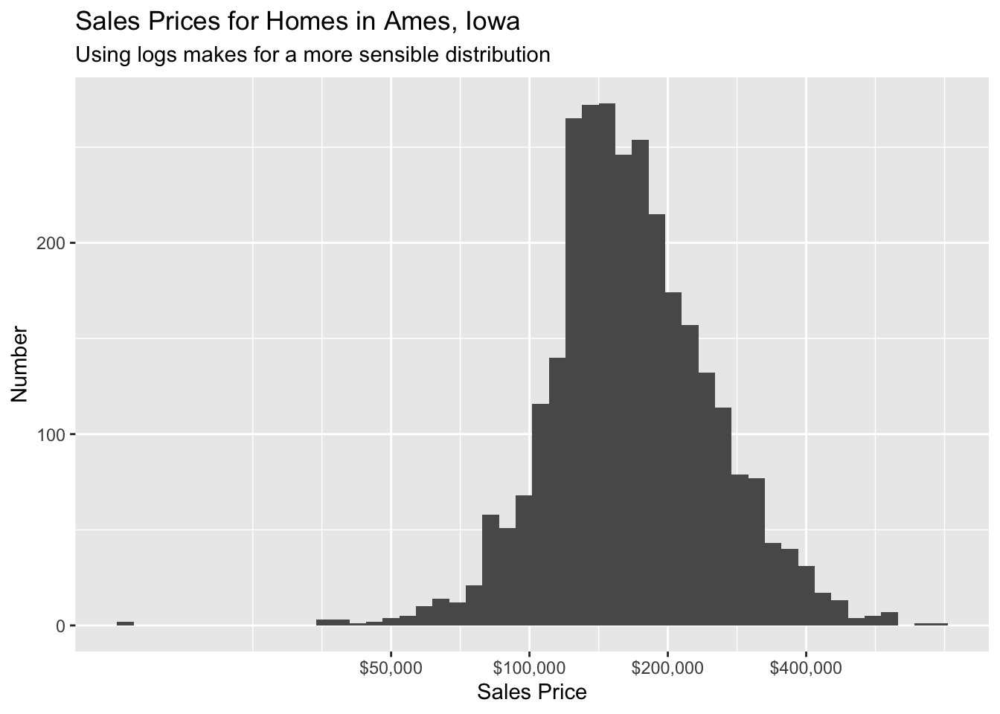

Chapter 10 Model Choice
There are many models we could make to explain a given outcome variable. The chapter provides the tools for exploring which model we “ought” to select. We will use these tools in Chapters 11 (for continuous outcomes) and 12 (for discrete outcomes).
10.1 The Ames housing data
Packages:
The tidymodels library includes all the necessary libraries, in the same way that tidyverse includes libraries like ggplot2 and dplyr. The ames data lives in the modeldata library, which is part of tidymodels. The ranger package is used for creating random forests, a type of model which will introduce in this chapter and then discuss more extensively in Chapter 12.
The ames housing data set contains data on 2,930 properties in Ames, Iowa, including columns related to
- house characteristics (bedrooms, garage, fireplace, pool, porch, etc.),
- location (neighborhood),
- lot information (zoning, shape, size, etc.),
- ratings of condition and quality, and
- sale price.
It makes sense to start with the outcome we want to predict: the last sale price of the house (in USD):
ggplot(ames, aes(x = Sale_Price)) +
geom_histogram(bins = 50) +
scale_x_continuous(breaks = c(0, 200000, 400000, 600000),
labels = scales::dollar_format()) +
labs(title = "Sales Prices for Homes in Ames, Iowa",
subtitle = "Skewed distribution suggests need for a log transformation",
x = "Sales Price",
y = "Number")
The data are right-skewed; there are more inexpensive houses than expensive ones. The median sale price was $160,000 and the most expensive house was $755,000. When modeling this outcome, a strong argument can be made that the price should be log-transformed. The advantages of doing this are that no houses would be predicted with negative sale prices and that errors in predicting expensive houses will not have an undue influence on the model.
ggplot(ames, aes(x = Sale_Price)) +
geom_histogram(bins = 50) +
scale_x_log10(breaks = c(0, 50000, 100000, 200000, 400000),
labels = scales::dollar_format()) +
labs(title = "Sales Prices for Homes in Ames, Iowa",
subtitle = "Using logs makes for a more sensible distribution",
x = "Sales Price",
y = "Number")
While not perfect, this will probably result in better models than using the untransformed data. From this point on, the outcome column is pre-logged in the ames data frame:
Another important aspect of these data for our modeling are their geographic locations. This spatial information is contained in the data in two ways: a qualitative Neighborhood label as well as quantitative longitude and latitude data. To visualize the spatial information, let’s use both together to plot the data on a map and color by neighborhood:

We can see a few noticeable patterns. First, there is a void of data points in the center of Ames. This corresponds to Iowa State University. Second, while there are a number of neighborhoods that are geographically isolated, there are others that are adjacent to each other. For example, Timberland is located apart from almost all other neighborhoods:

The Meadow Village neighborhood in Southwest Ames is like an island of properties ensconced inside the sea of properties that make up the Mitchell neighborhood:

A detailed inspection of the map also shows that the neighborhood labels are not completely reliable. For example, there are some properties labeled as being in Northridge that are surrounded by houses in the adjacent Somerset neighborhood:

Also, there are ten isolated houses labeled as being in Crawford but which are not close to the majority of the other houses in that neighborhood:

Also notable is the “Iowa Department of Transportation (DOT) and Rail Road” neighborhood adjacent to the main road on the east side of Ames. There are several clusters of houses within this neighborhood as well as some longitudinal outliers; the two houses furthest east are isolated from the other locations.

It is critical to conduct exploratory data analysis prior to beginning any modeling. These housing data have characteristics that present interesting challenges about how the data should be processed and modeled. Basic questions include:
Are there any odd or noticeable things about the distributions of the individual predictors? Is there much skewness or any pathological distributions?
Are there high correlations between predictors? For example, there are multiple predictors related to the size of the house. Are some redundant?
Are there associations between predictors and the outcomes?
Many of these questions will be revisited as these data are used in upcoming examples.
10.2 Feature engineering with recipes
Feature engineering encompasses activities that reformat predictor values to make them easier for a model to use effectively. This includes transformations and encodings of the data to best represent their important characteristics. Imagine that you have two predictors in a data set that can be more effectively represented in your model of interest as a ratio; creating a new predictor from the ratio of the original two is a simple example of feature engineering.
Take the location of a house in Ames as a more involved example. There are a variety of ways that this spatial information can be exposed to a model, including neighborhood (a qualitative measure), longitude/latitude, distance to the nearest school or Iowa State University, and so on. When choosing how to encode these data in modeling, we might choose an option we believe most associated with the outcome. The original format of the data — e.g., numeric (like distance) versus categorical (like neighborhood) — is also a driving factor in feature engineering choices.
There are many other examples of preprocessing to build better features for modeling:
Correlation between predictors can be reduced via feature extraction or the removal of some predictors.
When some predictors have missing values, they can be imputed using a sub-model.
Models that use variance-type measures may benefit from coercing the distribution of some skewed predictors to be symmetric by estimating a transformation.
The recipes package combines different feature engineering and preprocessing tasks into a single object and then applies these transformations to different data sets.
10.2.1 Splitting data
Before making a recipe, we should organize our data.
The primary approach for empirical model validation is to split the existing pool of data into two distinct sets. Some observations are used to develop and optimize the model. This training set is usually the majority of the data. These data are a sandbox for model building where different models can be fit, feature engineering strategies are investigated, and so on. We, as data scientists, spend the vast majority of the modeling process using the training set to develop the model.
The other portion of the observations are placed into the test set. This is held in reserve until one or two models are chosen as the methods that are mostly likely to succeed. The test set is then used as the final arbiter to determine the efficacy of the model. It is critical to only look at the test set once; otherwise, it becomes part of the modeling process.
Suppose we allocate 80% of the data to the training set and the remaining 20% for testing. The most common method is to use simple random sampling. The intial_split() function from the rsample package performs this split. It takes the data frame as an argument as well as the proportion to be placed into training. We use set.seed() so that the results can be reproduced later. Create a data split which we will use throughout this chapter.
## <Analysis/Assess/Total>
## <2198/732/2930>The printed information denotes the amount of data in the training set (\(n = 2,198\)), the amount in the test set (\(n = 732\)), and the size of the original pool of samples (\(n = 2,930\)).
The object ames_split is an rsplit object and only contains the partitioning information; to get the resulting data sets, we apply two more functions:
## [1] 2198 74These objects are data frames with the same columns as the original data but only the appropriate rows for each set.
The amount of data that should be allocated when splitting the data is highly dependent on the context of the problem at hand. Too much data in the training set lowers the quality of the performance estimates. Conversely, too much data in the test set handicaps the model’s ability to find appropriate parameter estimates.
10.2.2 A simple recipe for the Ames housing data
In this section, we will focus on a small subset of the predictors available in the Ames housing data:
The neighborhood (qualitative, with 29 neighborhoods in the training set)
The general living area (continuous, named
Gr_Liv_Area)The year built (
Year_Built)The type of building (
Bldg_Type)
Suppose that a Bayesian linear regression model were fit to these data. A standard call to stan_glm() might look like:
What the formula above does can be decomposed into a series of steps:
Sale price is defined as the outcome while neighborhood, general living area, the year built, and building type variables are all defined as predictors.
A log transformation is applied to the general living area predictor.
The neighborhood and building type columns are converted from a non-numeric format to a numeric format. Many R models, like
stan_glm(), do this automatically, but better safe than sorry.
The formula method will apply these data manipulations to any data, including new data, that are passed to the predict() function.
A recipe is also an object that defines a series of steps for data processing. Unlike the formula method inside a modeling function, the recipe defines the steps without immediately executing them; it is only a specification of what should be done. Here is a recipe equivalent to the formula above:
ames_rec <-
recipe(Sale_Price ~ Neighborhood + Gr_Liv_Area +
Year_Built + Bldg_Type,
data = ames_train) %>%
step_log(Gr_Liv_Area, base = 10) %>%
step_dummy(all_nominal())
ames_rec## Data Recipe
##
## Inputs:
##
## role #variables
## outcome 1
## predictor 4
##
## Operations:
##
## Log transformation on Gr_Liv_Area
## Dummy variables from all_nominal()Let’s break this down:
The call to
recipe()with a formula tells the recipe the roles of the variables (e.g., predictor, outcome). It only uses the data to determine the data types for the columns.step_log()declares thatGr_Liv_Areashould be log transformed.step_dummy()is used to specify which variables should be converted from a qualitative format to a quantitative format, in this case, using dummy or indicator variables. An indicator or dummy variable is a binary numeric variable (a column of ones and zeroes) that encodes qualitative information; we will dig deeper into these kinds of variables in Section 10.2.3.
The function all_nominal() captures the names of any columns that are currently factor or character (i.e., nominal) in nature. This is a dplyr selector function similar to starts_with() or matches() but which can only be used inside of a recipe.
What is the advantage to using a recipe? There are a few, including:
These computations can be recycled across models since they are not tightly coupled to the modeling function.
A recipe enables a broader set of data processing choices than formulas can offer.
The syntax can be very compact. For example,
all_nominal()can be used to capture many variables for specific types of processing while a formula would require each to be explicitly listed.All data processing can be captured in a single R object instead of in scripts that are repeated, or even spread across different files.
10.2.3 Encoding qualitative data in a numeric format
One of the most common feature engineering tasks is transforming nominal or qualitative data (factors or characters) so that they can be encoded or represented numerically. Sometimes we can alter the factor levels of a qualitative column in helpful ways prior to such a transformation. For example, step_unknown() can be used to change missing values to a dedicated factor level. Similarly, if we anticipate that a new factor level may be encountered in future data, step_novel() can allocate a new level for this purpose.
Additionally, step_other() can be used to analyze the frequencies of the factor levels in the training set and convert infrequently occurring values to a catch-all level of “other”, with a specific threshold that can be specified. A good example is the Neighborhood predictor in our data:
Here there are two neighborhoods that have less than five properties in the training data; in this case, no houses at all in the Landmark neighborhood were included in the training set. For some models, it may be problematic to have dummy variables with a single non-zero entry in the column. At a minimum, it is highly improbable that these features would be important to a model. If we add step_other(Neighborhood, threshold = 0.01) to our recipe, the bottom 1% of the neighborhoods will be lumped into a new level called “other”. In this training set, this will catch 8 neighborhoods.
For the Ames data, we can amend the recipe to use:
ames_rec <-
recipe(Sale_Price ~ Neighborhood + Gr_Liv_Area + Year_Built + Bldg_Type,
data = ames_train) %>%
step_log(Gr_Liv_Area, base = 10) %>%
step_other(Neighborhood, threshold = 0.01) %>%
step_dummy(all_nominal())There are a few strategies for converting a factor predictor to a numeric format. The most common method is to create “dummy” or indicator variables. Let’s take the predictor in the Ames data for the building type, which is a factor variable with five levels. For dummy variables, the single Bldg_Type column would be replaced with four numeric columns whose values are either zero or one. These binary variables represent specific factor level values. In R, the convention is to exclude a column for the first factor level (OneFam, in this case). The Bldg_Type column would be replaced with a column called TwoFmCon that is one when the row has that value and zero otherwise. Three other columns are similarly created:
## # A tibble: 5 x 5
## `Raw Data` TwoFmCon Duplex Twnhs TwnhsE
## <fct> <dbl> <dbl> <dbl> <dbl>
## 1 OneFam 0 0 0 0
## 2 TwoFmCon 1 0 0 0
## 3 Duplex 0 1 0 0
## 4 Twnhs 0 0 1 0
## 5 TwnhsE 0 0 0 1Why not all five? The most basic reason is simplicity; if you know the value for these four columns, you can determine the last value because these are mutually exclusive categories. More technically, the classical justification is that a number of models, including ordinary linear regression, have numerical issues when there are linear dependencies between columns. If all five building type indicator columns are included, they would add up to the intercept column (if there is one). This would cause an issue, or perhaps an outright error, in the underlying matrix algebra.
Different recipe steps can have different effects on columns of the data. For example, step_log() modifies a column in-place without changing the name. Other steps, such as step_dummy() eliminate the original data column and replace it with one or more columns with different names. This behavior depends on the type of operation being done.
10.2.4 Interaction terms
Interaction effects involve two or more predictors. Such an effect occurs when one predictor has an effect on the outcome that is contingent on one or more other predictors. For example, if you were trying to predict your morning commute time, two potential predictors could be the amount of traffic and the time of day. However, the relationship between commute time and the amount of traffic is different for different times of day. In this case, you could add an interaction term between the two predictors to the model along with the original two predictors (which are called the “main effects”). Numerically, an interaction term between predictors is encoded as their product. Interactions are only defined in terms of their effect on the outcome and can be combinations of different types of data (e.g., numeric, categorical, etc).
After exploring the Ames training set, we might find that the regression slopes for the general living area differ for different building types:
ggplot(ames_train, aes(x = Gr_Liv_Area, y = 10^Sale_Price)) +
geom_point(alpha = .2) +
facet_wrap(~ Bldg_Type) +
geom_smooth(method = lm, formula = y ~ x, se = FALSE, col = "red") +
scale_x_log10() +
scale_y_log10() +
labs(x = "General Living Area", y = "Sale Price (USD)")
How are interactions specified? Recipes are explicit and sequential. With the current recipe, step_dummy() has already created dummy variables. How would we combine these for an interaction? The additional step would look like step_interact(~ interaction terms) where the terms on the right-hand side of the tilde are the interactions. These can include selectors, so it would be appropriate to use:
ames_rec <-
recipe(Sale_Price ~ Neighborhood + Gr_Liv_Area + Year_Built + Bldg_Type,
data = ames_train) %>%
step_log(Gr_Liv_Area, base = 10) %>%
step_other(Neighborhood, threshold = 0.01) %>%
step_dummy(all_nominal()) %>%
step_interact( ~ Gr_Liv_Area:starts_with("Bldg_Type_") )Additional interactions can be specified in this formula by separating them by +. Also note that the recipe will only utilize interactions between different variables; if the formula uses var_1:var_1, this term will be ignored.
Our code so far:
library(tidymodels)
data(ames)
ames <- mutate(ames, Sale_Price = log10(Sale_Price))
set.seed(10)
ames_split <- initial_split(ames, prob = 0.80)
ames_train <- training(ames_split)
ames_test <- testing(ames_split)
ames_rec <-
recipe(Sale_Price ~ Neighborhood + Gr_Liv_Area + Year_Built + Bldg_Type +
Latitude + Longitude, data = ames_train) %>%
step_log(Gr_Liv_Area, base = 10) %>%
step_other(Neighborhood, threshold = 0.01) %>%
step_dummy(all_nominal()) %>%
step_interact( ~ Gr_Liv_Area:starts_with("Bldg_Type_") ) 10.3 Creating models with parsnip
The parsnip package provides a standardized interface for a variety of different models.
Suppose that a linear regression model was our initial choice for the model. This is equivalent to specifying that the outcome data is numeric and that the predictors are related to the model in terms of simple slopes and intercepts:
\[y_i = \beta_0 + \beta_1 x_{1i} + \ldots + \beta_p x_{pi}\]
There are a variety of methods that can be used to estimate the model parameters:
Ordinary linear regression uses the traditional method of least squares to solve for the model parameters.
Regularized linear regression adds a penalty to the least squares method to encourage simplicity by removing predictors and/or shrinking their coefficients towards zero. This can be executed using Bayesian or non-Bayesian techniques.
In R, the stats package can be used for the first case. The syntax for lm() is
where ... symbolizes other options to pass to lm().
To estimate a Bayesian model, we use stan_glm() from the rstanarm package, as we have done in the last few chapters.
A popular non-Bayesian approach to regression is the glmnet model. Its syntax is:
In this case, the predictor data must already be formatted into a numeric matrix; there is only an x/y method and no formula method.
Note that these interfaces are heterogeneous in either how the data are passed to the model function or in terms of their arguments. The first issue is that, to fit models across different packages, the data must be formatted in different ways. lm() and stan_glm() only have formula interfaces while glmnet() does not. For other types of models, the interfaces may be even more disparate. For a person trying to do data analysis, these differences require the memorization of each package’s syntax and can be very frustrating.
For tidymodels, the approach to specifying a model is intended to be more unified:
Specify the type of model based on its mathematical structure.
Specify the engine for fitting the model. Most often this reflects the software package that should be used.
When required, declare the mode of the model. The mode reflects the type of prediction outcome. For numeric outcomes, the mode is regression; for qualitative outcomes, it is classification. Note that parsnip constrains the outcome column of a classification models to be encoded as a factor; using binary numeric values will result in an error. If a model can only create one type of model, such as linear regression, the mode is already set.
These specifications are built without referencing the data. For example, for the three cases above:
## Linear Regression Model Specification (regression)
##
## Computational engine: lm## Linear Regression Model Specification (regression)
##
## Computational engine: glmnet## Linear Regression Model Specification (regression)
##
## Computational engine: stanNot only does parsnip enable a consistent model interface for different packages, it also provides consistency in the model arguments. Modeling functions in parsnip separate model arguments into two categories:
Main arguments are more commonly used and tend to be available across engines.
Engine arguments are either specific to a particular engine or used more rarely.
10.4 A model workflow
In the previous two sections, we discussed the recipes and parsnip packages. These packages can be used to prepare the data for analysis and fitting the model. This section introduces a new object called a model workflow. The purpose of this object is to encapsulate the major pieces of the modeling process. The workflow is important in two ways. First, using a workflow object encourages good methodology since it is a single point of entry to the estimation components of a data analysis. Second, it enables users to better organize their projects.
10.4.1 Where does the model begin and end?
So far, when we have used the term “the model”, we have meant a structural equation that relates some predictors to one or more outcomes. For some data sets that are straightforward in nature, fitting the model itself may be the entire process. However, there are a variety of choices and additional steps that often occur before the model is fit:
While our example model may have \(p\) predictors, it is common to start with more than \(p\) candidate predictors. Through exploratory data analysis or using domain knowledge, some of the predictors may be excluded from the analysis. In other cases, a feature selection algorithm may be used to make a data-driven choice about which predictors to include.
There are times when the value of an important predictor is missing. Rather than eliminating this sample from the data set, the missing value could be imputed using other values in the data. For example, if \(x_1\) were missing but was correlated with predictors \(x_2\) and \(x_3\), an imputation method could estimate the missing \(x_1\) observation from the values of \(x_2\) and \(x_3\).
It may be beneficial to transform the scale of a predictor. If there is not a priori information on what the new scale should be, we can estimate the proper scale using a statistical transformation technique, the existing data, and some optimization criterion. Other transformations, such as PCA, take groups of predictors and transform them into new features that are used as the predictors.
It is important to focus on the broader modeling process, instead of only fitting the specific model used to estimate parameters. This broader process includes any preprocessing steps, the model fit itself, as well as potential post-processing activities. In this book, we will refer to this broader process as the model workflow and include in it any data-driven activities that are used to produce a final model equation.
In other software, such as Python or Spark, similar collections of steps are called pipelines. In tidymodels, the term “pipeline” already connotes a sequence of operations chained together with a pipe operator (such as %>%). Rather than using ambiguous terminology in this context, we call the sequence of computational operations related to modeling workflows.
Binding together the analytical components of a data analysis is important for another reason. We will learn how to accurately measure performance, as well as how to optimize structural parameters (i.e. model tuning). To correctly quantify model performance on the training set, we recommend using resampling methods. To do this properly, no data-driven parts of the analysis should be excluded from validation. To this end, the workflow must include all significant estimation steps.
10.4.2 Workflow basics
The workflows package allows the user to bind modeling and preprocessing objects together. Let’s start again with the Ames data and a simple linear model:
A workflow always requires a parsnip model object:
## ══ Workflow ════════════════════════════════════════════════════════════════
## Preprocessor: None
## Model: linear_reg()
##
## ── Model ───────────────────────────────────────────────────────────────────
## Linear Regression Model Specification (regression)
##
## Computational engine: lmNotice that we have not yet specified how this workflow should preprocess the data: Preprocessor: None.
10.4.3 Workflows and recipes
Instead of using model formulas, recipe objects can also be used to preprocess data for modeling. Previously, we summarized a recipe that specified several preprocessing and feature engineering steps. These are encapsulated inside the object ames_rec and are attached to the workflow:
add_model() and add_recipe() are examples of some of the helper functions which are available in tidymodels. The goal is to make modeling as easy as basic data analysis is in the Tidyverse.
We use fit() to complete the model and predict() to create predictions from the fitted model.
## # A tibble: 3 x 1
## .pred
## <dbl>
## 1 5.38
## 2 5.35
## 3 5.42Once the model is created and fit, we can use the results in a variety of ways; we might want to plot, print, or otherwise examine the model output. Several quantities are stored in a parsnip model object, including the fitted model. Making predictions is the most important task.
For predictions, parsnip always conforms to the following rules:
- The results are always a tibble.
- The column names of the tibble are always predictable.
- There are always as many rows in the tibble as there are in the input data set.
For example, when numeric data are predicted:
## # A tibble: 5 x 1
## .pred
## <dbl>
## 1 5.38
## 2 5.35
## 3 5.42
## 4 5.17
## 5 4.98The row order of the predictions are always the same as the original data. The leading dot in the variable names protect against merging data with duplicate names. There are some data sets that contain predictors named pred!
These three rules make it easier to merge predictions with the original data:
## # A tibble: 5 x 2
## Sale_Price .pred
## <dbl> <dbl>
## 1 5.33 5.38
## 2 5.28 5.35
## 3 5.37 5.42
## 4 5.27 5.17
## 5 5.15 4.98The third rule regarding the number of rows in the output is critical. For example, if any rows of the new data contain missing values, the output will be padded with missing results for those rows.
A main advantage of standardizing the model interface and prediction types in parsnip is that, when different models are used, the syntax is identical.
Code:
library(tidymodels)
data(ames)
ames <- mutate(ames, Sale_Price = log10(Sale_Price))
set.seed(10)
ames_split <- initial_split(ames, prob = 0.80)
ames_train <- training(ames_split)
ames_test <- testing(ames_split)
ames_rec <-
recipe(Sale_Price ~ Neighborhood + Gr_Liv_Area + Year_Built + Bldg_Type +
Latitude + Longitude, data = ames_train) %>%
step_log(Gr_Liv_Area, base = 10) %>%
step_other(Neighborhood, threshold = 0.01) %>%
step_dummy(all_nominal()) %>%
step_interact( ~ Gr_Liv_Area:starts_with("Bldg_Type_") )
lm_model <- linear_reg() %>%
set_engine("lm")
lm_wflow <-
workflow() %>%
add_model(lm_model) %>%
add_recipe(ames_rec)
lm_fit <- fit(lm_wflow, ames_train)10.5 Judging model effectiveness
Once we have a model, we need to know how well it works. A quantitative approach for estimating effectiveness allows us to understand the model, to compare different models, or to tweak the model to improve performance. Our focus in tidymodels is on empirical validation; this usually means using data that were not used to create the model as the test bed on which we measure effectiveness. The choice of which metrics to examine can be critical. This section will largely focus on the yardstick package.
The effectiveness of any given model depends on how the model will be used. A causal model is used primarily to understand relationships, and typically is discussed with a strong focus on the choice (and validity) of probabilistic distributions and other generative qualities that define the model. For a model used primarily for prediction, by contrast, predictive strength is key and concerns about underlying statistical qualities are less important. Predictive strength is usually focused on how close our predictions come to the observed data, i.e., fidelity of the model predictions to the actual results. This section focuses on functions that can be used to measure predictive strength. However, our advice for those developing causal models is to use these techniques even when the model will not be used with the primary goal of prediction.
Optimization of statistical characteristics of the model does not imply that the model fits the data well. Even for purely inferential models, some measure of fidelity to the data should accompany the inferential results. Using this, the consumers of the analyses can calibrate their expectations for the results of the statistical analysis.
10.5.1 Metrics
Recall that tidymodels prediction functions produce tibbles with columns for the predicted values. These columns have consistent names, and the functions in the yardstick package that produce performance metrics have consistent interfaces. The functions are data frame-based, as opposed to vector-based, with the general syntax of:
where data is a data frame or tibble and truth is the column with the observed outcome values. Other arguments are used to specify the column(s) containing the predictions.
To illustrate, let’s evaluate the model we have constructed for the Ames house price data. Recall that the lm_fit object was a linear regression model whose predictor set was supplemented with an interaction term. It was created from a training set (named ames_train). Although we do not advise using the test set at this juncture of the modeling process, it will be used to illustrate functionality and syntax. The data frame ames_test consists of 732 properties. To start, let’s produce predictions:
## # A tibble: 732 x 1
## .pred
## <dbl>
## 1 5.38
## 2 5.35
## 3 5.42
## 4 5.17
## 5 4.98
## 6 5.17
## 7 5.37
## 8 5.25
## 9 5.17
## 10 5.44
## # … with 722 more rowsThe predicted numeric outcome from the regression model is named .pred. Let’s match the predicted values with their corresponding observed outcome values:
## # A tibble: 732 x 2
## .pred Sale_Price
## <dbl> <dbl>
## 1 5.38 5.33
## 2 5.35 5.28
## 3 5.42 5.37
## 4 5.17 5.27
## 5 4.98 5.15
## 6 5.17 5.23
## 7 5.37 5.33
## 8 5.25 5.26
## 9 5.17 5.11
## 10 5.44 5.46
## # … with 722 more rowsNote that both the predicted and observed outcomes are in log10 units. It is best practice to analyze the predictions on the transformed scale (if one were used) even if the predictions are reported using the original units.
Let’s plot the data before computing metrics:
ggplot(ames_test_res, aes(x = Sale_Price, y = .pred)) +
geom_abline(lty = 2) +
geom_point(alpha = 0.5) +
labs(y = "Predicted Sale Price (log10)",
x = "Sale Price (log10)") +
coord_obs_pred()geom_abine() draws the line at the 45 degree line. coord_obs_pred() is a function from tidymodels which provides useful defaults for graphical comparisons of actual values with predicted values.
There is one property that is substantially over-predicted.
Let’s compute the root mean squared error for this model using the rmse() function:
## # A tibble: 1 x 3
## .metric .estimator .estimate
## <chr> <chr> <dbl>
## 1 rmse standard 0.0811The output above shows the standard format of the output of yardstick functions. Metrics for numeric outcomes usually have a value of “standard” for the .estimator column. Examples with different values for this column are shown below.
To compute multiple metrics at once, we can create a metric set. Let’s add \(R^2\) and the mean absolute error:
ames_metrics <- metric_set(rmse, rsq, mae)
ames_metrics(ames_test_res, truth = Sale_Price, estimate = .pred)## # A tibble: 3 x 3
## .metric .estimator .estimate
## <chr> <chr> <dbl>
## 1 rmse standard 0.0811
## 2 rsq standard 0.800
## 3 mae standard 0.0580This tidy data format stacks the metrics vertically.
10.5.2 Resampling for evaluating performance
We usually need to understand the effectiveness of the model before using the test set. In this section, we describe an approach called resampling that can fill this gap. Resampling estimates of performance can generalize to new data.
10.5.3 Resampling methods
Resampling methods are empirical simulation systems that emulate the process of using some data for modeling and different data for evaluation. Most resampling methods are iterative, meaning that this process is repeated multiple times. This diagram illustrates how resampling methods generally operate:

Resampling is only conducted on the training set. The test set is not involved. For each iteration of resampling, the data are partitioned into two subsamples:
The model is fit with the analysis set.
The model is evaluated with the assessment set.
These are somewhat analogous to training and test sets. Our language of analysis and assessment avoids confusion with initial split of the data. These data sets are mutually exclusive. The partitioning scheme used to create the analysis and assessment sets is usually the defining characteristic of the method.
Suppose twenty iterations of resampling are conducted. This means that twenty separate models are fit on the analysis sets and the corresponding assessment sets produce twenty sets of performance statistics. The final estimate of performance for a model is the average of the twenty replicates of the statistics. This average has very good generalization properties. The most popular method is cross-validation.
Cross-validation is a well established resampling method. While there are a number of variations, the most common cross-validation method is V-fold cross-validation. The data are randomly partitioned into V sets of roughly equal size (called the “folds”). For illustration, V = 3 is shown below for a data set of thirty training set points with random fold allocations. The number inside the symbols is the sample number:

The color of the symbols represent their randomly assigned folds.
For 3-fold cross-validation, the three iterations of resampling are illustrated below. For each iteration, one fold is held out for assessment statistics and the remaining folds are substrate for the model. This process continues for each fold so that three models produce three sets of performance statistics.

When V = 3, the analysis sets are 2/3 of the training set and each assessment set is a distinct 1/3. The final resampling estimate of performance averages each of the V replicates.
Using V = 3 is a good choice to illustrate cross-validation but is a poor choice in practice. Values of V are most often 5 or 10; we generally prefer 10-fold cross-validation as a default.
The primary input is the training set data frame as well as the number of folds (defaulting to 10):
## # 10-fold cross-validation
## # A tibble: 10 x 2
## splits id
## <list> <chr>
## 1 <split [2K/220]> Fold01
## 2 <split [2K/220]> Fold02
## 3 <split [2K/220]> Fold03
## 4 <split [2K/220]> Fold04
## 5 <split [2K/220]> Fold05
## 6 <split [2K/220]> Fold06
## 7 <split [2K/220]> Fold07
## 8 <split [2K/220]> Fold08
## 9 <split [2K/219]> Fold09
## 10 <split [2K/219]> Fold10The column named splits contains the information on how to split the data (similar to the object used to create the initial training/test partition). While each row of splits has an embedded copy of the entire training set, R is smart enough not to make copies of the data in memory. The print method inside of the tibble shows the frequency of each: [2K/220] indicates that roughly two thousand samples are in the analysis set and 220 are in that particular assessment set.
These rsample objects also always contain a character column called id that labels the partition.
10.5.4 Estimating performance
To reiterate the process:
During resampling, the analysis set is used to preprocess the data, apply the preprocessing to itself, and use these processed data to fit the model.
The preprocessing statistics produced by the analysis set are applied to the assessment set. The predictions from the assessment set estimate performance.
This sequence repeats for every resample. If there are B resamples, there are B replicates of each of the performance metrics. The final resampling estimate is the average of these B statistics. If B = 1, as with a validation set, the individual statistics represent overall performance.
For a comparison to this linear model, we can also fit a different type of model. Random forests are a tree ensemble method that operate by creating a large number of decision trees from slightly different versions of the training set. This collection of trees makes up the ensemble. When predicting a new sample, each ensemble member makes a separate prediction. These are averaged to create the final ensemble prediction for the new data point.
Random forest models are very powerful and they can emulate the underlying data patterns very closely. While this model can be computationally intensive, it is very low-maintenance. Very little preprocessing is required.
Using the same predictor set as the linear model (without the extra preprocessing steps), we can fit a random forest model to the training set using via the ranger package. This model requires no preprocessing so a simple formula can be used directly.
rf_model <-
rand_forest(trees = 1000) %>%
set_engine("ranger") %>%
set_mode("regression")
rf_wflow <-
workflow() %>%
add_recipe(recipe(Sale_Price ~ Neighborhood + Gr_Liv_Area +
Year_Built + Bldg_Type,
data = ames_train)) %>%
add_model(rf_model) The fit_resamples() function is analogous to fit(), but instead of having a data argument, fit_resamples() has resamples which expects an rset object like the ones shown above. We typically pipe a wokflow object directly into fit_resamples().
There are a number of other optional arguments, such as:
metrics: A metric set of performance statistics to compute. By default, regression models use RMSE and R2 while classification models compute the area under the ROC curve and overall accuracy. Note that this choice also defines what predictions are produced during the evaluation of the model. For classification, if only accuracy is requested, class probability estimates are not generated for the assessment set (since they are not needed).control: A list created bycontrol_resamples()with various options.
The control arguments include:
verbose: A logical for printing logging.extract: A function for retaining objects from each model iteration (discussed below).save_pred: A logical for saving the assessment set predictions.
For our example, let’s save the predictions in order to visualize the model fit and residuals:
set.seed(130)
rf_res <-
rf_wflow %>%
fit_resamples(resamples = ames_folds,
control = control_resamples(save_pred = TRUE))
rf_res## # Resampling results
## # 10-fold cross-validation
## # A tibble: 10 x 5
## splits id .metrics .notes .predictions
## <list> <chr> <list> <list> <list>
## 1 <split [2K/220]> Fold01 <tibble [2 × 3]> <tibble [0 × 1]> <tibble [220 × 3]>
## 2 <split [2K/220]> Fold02 <tibble [2 × 3]> <tibble [0 × 1]> <tibble [220 × 3]>
## 3 <split [2K/220]> Fold03 <tibble [2 × 3]> <tibble [0 × 1]> <tibble [220 × 3]>
## 4 <split [2K/220]> Fold04 <tibble [2 × 3]> <tibble [0 × 1]> <tibble [220 × 3]>
## 5 <split [2K/220]> Fold05 <tibble [2 × 3]> <tibble [0 × 1]> <tibble [220 × 3]>
## 6 <split [2K/220]> Fold06 <tibble [2 × 3]> <tibble [0 × 1]> <tibble [220 × 3]>
## 7 <split [2K/220]> Fold07 <tibble [2 × 3]> <tibble [0 × 1]> <tibble [220 × 3]>
## 8 <split [2K/220]> Fold08 <tibble [2 × 3]> <tibble [0 × 1]> <tibble [220 × 3]>
## 9 <split [2K/219]> Fold09 <tibble [2 × 3]> <tibble [0 × 1]> <tibble [219 × 3]>
## 10 <split [2K/219]> Fold10 <tibble [2 × 3]> <tibble [0 × 1]> <tibble [219 × 3]>The return value is a tibble similar to the input resamples, along with some extra columns:
.metricsis a list column of tibbles containing the assessment set performance statistics..notesis another list column of tibbles cataloging any warnings or errors generated during resampling. Note that errors will not stop subsequent execution of resampling..predictionsis present whensave_pred = TRUE. This list column contains tibbles with the out-of-sample predictions.
While these list columns may look daunting, they can be easily reconfigured using tidyr or with convenience functions that tidymodels provides. For example, to return the performance metrics in a more usable format:
## # A tibble: 2 x 5
## .metric .estimator mean n std_err
## <chr> <chr> <dbl> <int> <dbl>
## 1 rmse standard 0.0751 10 0.00229
## 2 rsq standard 0.817 10 0.00761These are the resampling estimates averaged over the individual replicates. To get the metrics for each resample, use the option summarize = FALSE
To obtain the assessment set predictions:
## # A tibble: 2,198 x 4
## id .pred .row Sale_Price
## <chr> <dbl> <int> <dbl>
## 1 Fold01 5.29 11 5.33
## 2 Fold01 5.39 47 5.42
## 3 Fold01 5.38 52 5.31
## 4 Fold01 5.12 94 4.93
## 5 Fold01 5.05 97 5.07
## 6 Fold01 5.16 111 5.15
## 7 Fold01 5.11 115 5.13
## 8 Fold01 5.02 117 5.02
## 9 Fold01 5.06 118 5.03
## 10 Fold01 5.06 134 5.08
## # … with 2,188 more rowsThe prediction column names follow the conventions discussed for parsnip models. The observed outcome column always uses the original column name from the source data. The .row column is an integer that matches the row of the original training set so that these results can be properly arranged and joined with the original data.
Since this analysis used 10-fold cross-validation, there is one unique prediction for each training set sample. These data can generate helpful plots of the model to understand where it potentially failed. For example, let’s compare the observed and predicted values:
assess_res %>%
ggplot(aes(x = Sale_Price, y = .pred)) +
geom_point(alpha = .15) +
geom_abline(col = "red") +
coord_obs_pred() +
ylab("Predicted")There was one house in the training set with a low observed sale price that is significantly overpredicted by the model. Which house was that?
over_predicted <-
assess_res %>%
mutate(residual = Sale_Price - .pred) %>%
arrange(desc(abs(residual))) %>%
slice(1)
over_predicted## # A tibble: 1 x 5
## id .pred .row Sale_Price residual
## <chr> <dbl> <int> <dbl> <dbl>
## 1 Fold06 4.96 137 4.11 -0.855ames_train %>%
slice(over_predicted$.row) %>%
select(Gr_Liv_Area, Neighborhood, Year_Built, Bedroom_AbvGr, Full_Bath)## # A tibble: 1 x 5
## Gr_Liv_Area Neighborhood Year_Built Bedroom_AbvGr Full_Bath
## <int> <fct> <int> <int> <int>
## 1 832 Old_Town 1923 2 1These results can help us investigate why the prediction was poor for this house.
10.6 Comparing models with resampling
Once we create two or more models, the next step is to compare them. In some cases, comparisons might be within-model, where the same model might be evaluated with different features or preprocessing methods. Alternatively, between-model comparisons, such as when we compared linear regression and random forest models in Section 10.5.2, are the more common scenario.
In either case, the result is a collection of resampled summary statistics (e.g. RMSE, accuracy, etc.) for each model.
10.6.1 Resampled performance statistics
In Section 10.5.2, a random forest model for the Ames data was resampled with 10-fold cross-validation. These results were saved in the object rf_res.
We’ll estimate two additional models with the same resamples. First, the previous linear regression model, using the preprocessing defined in the ames_rec recipe, is resampled:
lm_with_inter_res <-
lm_wflow %>%
fit_resamples(resamples = ames_folds,
control = control_resamples(save_pred = TRUE))Secondly, a less complex recipe without the interaction terms is evaluated to determine if the extra complexity is worth it. Once added to a workflow, it is resampled:
no_inter_rec <-
recipe(Sale_Price ~ Neighborhood + Gr_Liv_Area + Year_Built + Bldg_Type +
Latitude + Longitude, data = ames_train) %>%
step_log(Gr_Liv_Area, base = 10) %>%
step_other(Neighborhood, threshold = 0.01) %>%
step_dummy(all_nominal())
lm_no_inter_res <-
workflow() %>%
add_model(lm_model) %>%
add_recipe(no_inter_rec) %>%
fit_resamples(resamples = ames_folds,
control = control_resamples(save_pred = TRUE))The difference in performance appears relatively minor:
## # A tibble: 2 x 5
## .metric .estimator mean n std_err
## <chr> <chr> <dbl> <int> <dbl>
## 1 rmse standard 0.0789 10 0.00213
## 2 rsq standard 0.798 10 0.0104## # A tibble: 2 x 5
## .metric .estimator mean n std_err
## <chr> <chr> <dbl> <int> <dbl>
## 1 rmse standard 0.0784 10 0.00205
## 2 rsq standard 0.801 10 0.00996Considering these results, it appears that the additional terms do not meaningfully improve the mean RMSE or R2 statistics.
Before making model comparisons or looking at the resampling results, it can be helpful to define a relevant practical effect size. Since these analyses focus on the RMSE statistics, the practical effect size is the change in RMSE that we would consider to be a realistic difference that matters. For example, we might think that two models are not practically different if their RMSE values are within \(\pm 2\)%. If this were the case, differences smaller than 2% are not deemed important.
Practical significance is subjective; two people can have very different ideas on the threshold for importance.
10.7 Summary
The tidymodels package provides the most popular and sophisticated tools for making/testing models in R. This chapter has provided a whirlwind tour. Don’t worry if you did not understand every detail! We will spend the last two chapters of the book practicing. Most model projects are structured in a very similar fashion. To review:
First, split up the data into training and test. Then, create cross-validation data sets from the training data. Professionals use set.seed() in order to make their analysis reproducible.
set.seed(10)
ames_split <- initial_split(ames, prob = 0.80)
ames_train <- training(ames_split)
ames_test <- testing(ames_split)
ames_folds <- vfold_cv(ames_train, v = 10)Second, start a model pipeline with workflow() and then add a model object. Note that we are no longer assigning the results of each step to a new object. There is no need for that since we don’t really care about the interim steps.
## ══ Workflow ════════════════════════════════════════════════════════════════
## Preprocessor: None
## Model: linear_reg()
##
## ── Model ───────────────────────────────────────────────────────────────────
## Linear Regression Model Specification (regression)
##
## Computational engine: lmThird, add a recipe — which should contain a formula and data — and then any associated step_* functions. (Note that we have simplified this slightly from the example above.)
... %>%
add_recipe(recipe(Sale_Price ~ Neighborhood + Gr_Liv_Area + Year_Built,
data = ames_train)) %>%
step_log(Gr_Liv_Area, base = 10) %>%
step_other(Neighborhood, threshold = 0.01) %>%
step_dummy(all_nominal())Fourth, assign this pipe to a single workflow object. This object can then be used in several different ways. The best way to name this object is to include the letters wfl so as to remember that it is a workflow object.
my_wfl <- workflow() %>%
add_model(linear_reg() %>%
set_engine("lm") %>%
set_mode("regression")) %>%
add_recipe(recipe(Sale_Price ~ Neighborhood + Gr_Liv_Area + Year_Built,
data = ames_train)) %>%
step_log(Gr_Liv_Area, base = 10) %>%
step_other(Neighborhood, threshold = 0.01) %>%
step_dummy(all_nominal())Fifth, see how well the approach works under cross-validation.
## x Fold02: model (predictions): Error in model.frame.default(Terms, newdata, na.act...## x Fold04: model (predictions): Error in model.frame.default(Terms, newdata, na.act...## # A tibble: 2 x 5
## .metric .estimator mean n std_err
## <chr> <chr> <dbl> <int> <dbl>
## 1 rmse standard 0.0858 8 0.00341
## 2 rsq standard 0.769 8 0.00981Note the two warning messages. By chance, in two of our cross-validation assessments samples there are new levels for Neighborhood (Green_Hills and Landmark) which are not part of their respective analysis samples. This causes a failure because the model does not know how to process factor levels which it has not seen before. Fortunately, the process works fine on the other 8 samples, so we can still use these results.
The result from a cross-validation exercise is the most important tool for deciding which model we should choose.
This workflow would form the heart of our analysis. We can try different model types and different formulas easily. Once we decide on a workflow we like, we can look more closely at the predicted values it produces for our training data as a whole.
my_wfl %>%
fit(data = ames_train) %>%
predict(new_data = ames_train) %>%
bind_cols(ames_train %>% select(Sale_Price))## # A tibble: 2,198 x 2
## .pred Sale_Price
## <dbl> <dbl>
## 1 5.21 5.33
## 2 5.09 5.02
## 3 5.16 5.24
## 4 5.31 5.39
## 5 5.27 5.28
## 6 5.27 5.29
## 7 5.31 5.28
## 8 5.27 5.25
## 9 5.25 5.26
## 10 5.21 5.23
## # … with 2,188 more rowsThis examination can also be a part of the process of creating a good workflow. Either way, we certainly want to be sure that, for our final model, the predictions on the training data look reasonable.
Sixth, as a last step, we can check performance in the test data, which we have not used for any part of the exercise. Do the predictions seem sensible? Make sure to still fit the model with the training data.
my_wfl %>%
fit(data = ames_train) %>%
predict(new_data = ames_test) %>%
bind_cols(ames_test %>% select(Sale_Price))## # A tibble: 732 x 2
## .pred Sale_Price
## <dbl> <dbl>
## 1 5.38 5.33
## 2 5.36 5.28
## 3 5.42 5.37
## 4 5.19 5.27
## 5 5.05 5.15
## 6 5.18 5.23
## 7 5.35 5.33
## 8 5.24 5.26
## 9 5.12 5.11
## 10 5.42 5.46
## # … with 722 more rowsHow well our model does with data it has never seen before is a good guide as to how well it will work on new data tomorrow.
my_wfl %>%
fit(data = ames_train) %>%
predict(new_data = ames_test) %>%
bind_cols(ames_test %>% select(Sale_Price)) %>%
metrics(truth = Sale_Price, estimate = `.pred`)## # A tibble: 3 x 3
## .metric .estimator .estimate
## <chr> <chr> <dbl>
## 1 rmse standard 0.0858
## 2 rsq standard 0.776
## 3 mae standard 0.0607Page built: 2020-11-09